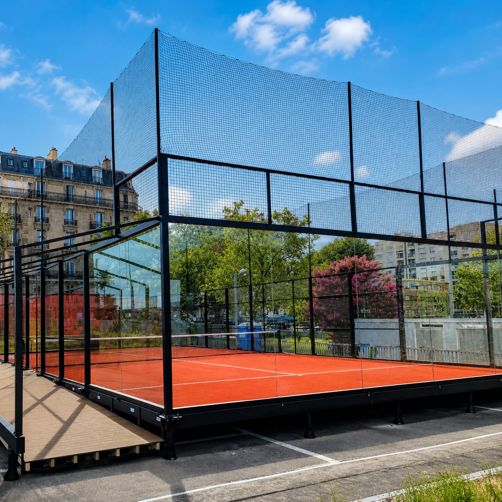

Plan beyond the lease.
Include permitted alterations, lease duration and end-of-lease requirements in the brief. Discuss dismantling and reuse before choosing the configuration.
Plan your court around your site.
Explore a raised foundation system combining adjustable supports, steel framing and modular deck panels. Start with your ground conditions, layout and installation plan.

An elevated modular system is an option to evaluate when differences in level, an existing surface or future dismantling are part of your project.
Include permitted alterations, lease duration and end-of-lease requirements in the brief. Discuss dismantling and reuse before choosing the configuration.
Share a survey showing high and low points. Support heights and ground capacity need to be reviewed together.
Consider access, drainage, surrounding circulation and installation logistics alongside the court footprint.
The support arrangement, component sizes and connections are selected as part of the project design.
Steps, ramps, edge protection and surrounding walkways should be planned alongside the court platform.
Explore mobile court systems ↗Compare both options against the same site conditions, supply scope and long-term plans.
| Consideration | Elevated modular system | Concrete base |
|---|---|---|
| Construction | Assembled support, frame and deck system | Site-built base with associated groundworks |
| Ground conditions | Assess supporting ground and support positions | Assess subgrade and base design |
| Level differences | Address through the selected support configuration | Address through groundworks and base design |
| Future changes | Review connections, reusable components and relocation scope | Review removal or alteration of permanent works |
| Budget scope | System, site preparation, transport and assembly | Groundworks, materials, labour and associated site works |
An elevated system may reduce some permanent groundworks on suitable sites. Confirm the actual scope before comparing quotations.
Separate the equipment package from the foundation, local works and delivery costs.
Court structure, glass, turf, lighting, accessories, foundation components and deck panels.
Ground preparation, support arrangements, drainage, steps, ramps and surrounding circulation.
Freight, unloading, site handling, assembly and the agreed installation support.
Send location, dimensions, photographs and available survey drawings.
Discuss the surface, levels, court quantity, access and intended scope.
Develop the proposed court and foundation arrangement for technical review.
Agree the specification, responsibilities and installation plan before production.
Every site has different ground, access and structural requirements. These answers explain what to include in your initial brief.
It can be evaluated for sites with differences in level. Suitability depends on support heights, ground conditions and the approved foundation arrangement. Send a level survey where available.
Preparation depends on the site. Supporting ground, drainage, stability and access still need to be assessed before the scope is confirmed.
It may suit a leased site where the foundation arrangement matches the ground conditions and lease requirements. Include the lease term, permitted alterations and end-of-lease obligations in your brief.
Discuss relocation before finalising the design. Connections, component reuse, replacement parts, transport and the new site conditions all affect the relocation scope.
The available range depends on the selected support configuration. Send measured site levels so the appropriate specification can be confirmed.
Do not assume that an elevated or demountable system changes approval requirements. Confirm the requirements for the proposed site and use with the relevant local authority.
Tell us where you want to build and what is already on the ground. Include your planned court quantity and any available dimensions.
The project enquiry form opens on SPORTENVO. You can discuss additional documents with the team.